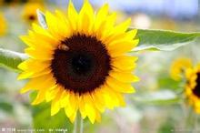

css3的学习
 向日葵（拉丁文：Helianthus annuus），属向日葵族，一年生本，高1～3.5米。茎直立，圆形多棱角，质硬被白色粗硬毛。广卵形的叶片通常互生，先端锐突或渐尖，有基出3脉，边缘具粗锯齿，两面粗糙，被毛，有长柄。头状花序，直径10～30厘米，单生于茎顶或枝端。总苞片多层，叶质，覆瓦状排列，被长硬毛，夏季开花，花序边缘生中性的黄色舌状花，不结实。花序中部为两性管状花，棕色或紫色，能结实。矩卵形瘦果，果皮木质化，灰色或黑色，称葵花籽。[1-2] 原产南美洲，驯化种由西班牙人于1510年从北美带到欧洲，最初为观赏用。19世纪末，又被从俄国引回北美洲。中国均有栽培。向日葵种子叫葵花籽，常炒制之后做为零食食用，味美，也可以榨葵花籽油用于食用，油渣可以做饲料。